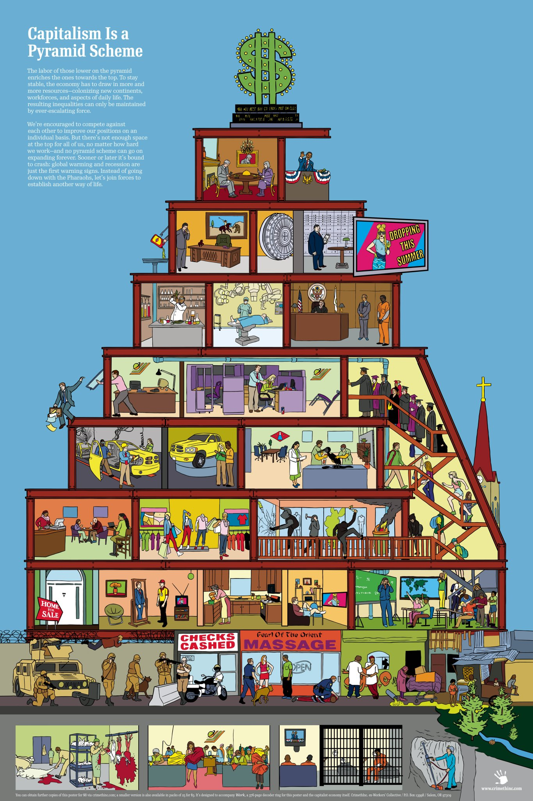

Although the continuous development of capitalism as a system dates only from the 16th century, antecedents of capitalist institutions existed in the ancient world, and flourishing pockets of capitalism were present in Europe during the later Middle Ages. The development of capitalism was spearheaded by the growth of the English cloth industry during the 16th, 17th, and 18th centuries. The feature of this development that distinguished capitalism from previous systems was the use of accumulated capital to enlarge productive capacity rather than to invest in economically unproductive enterprises, such as pyramids and cathedrals. This characteristic was encouraged by several historical events. In the ethic fostered by the Protestant Reformation of the 16th century, traditional disdain for acquisitive effort was diminished while hard work and frugality were given a stronger religious sanction. Economic inequality was justified on the grounds that the wealthy were more virtuous than the poor. Another contributing factor was the increase in Europe’s supply of precious metals and the resulting inflation in prices. Wages did not rise as fast as prices in this period, and the main beneficiaries of the inflation were the capitalists. The early capitalists (1500–1750) also enjoyed the benefits of the rise of strong national states during the mercantilist era. The policies of national power followed by these states succeeded in providing the basic social conditions, such as uniform monetary systems and legal codes, necessary for economic development and eventually made possible the shift from public to private initiative.
Beginning in the 18th century in England, the focus of capitalist development shifted from commerce to industry. The steady capital accumulation of the preceding centuries was invested in the practical application of technical knowledge during the Industrial Revolution. The ideology of classical capitalism was expressed in An Inquiry into the Nature and Causes of the Wealth of Nations (1776), by the Scottish economist and philosopher Adam Smith, which recommended leaving economic decisions to the free play of self-regulating market forces. After the French Revolution and the Napoleonic Wars had swept the remnants of feudalism into oblivion, Smith’s policies were increasingly put into practice. The policies of 19th-century political liberalism included free trade, sound money (the gold standard), balanced budgets, and minimum levels of poor relief. The growth of industrial capitalism and the development of the factory system in the 19th century also created a vast new class of industrial workers whose generally miserable working and living conditions inspired the revolutionary philosophy of Karl Marx (see also Marxism). Marx’s prediction of the inevitable overthrow of capitalism in a proletarian-led class war proved shortsighted, however.
World War I marked a turning point in the development of capitalism. After the war, international markets shrank, the gold standard was abandoned in favour of managed national currencies, banking hegemony passed from Europe to the United States, and trade barriers multiplied. The Great Depression of the 1930s brought the policy of laissez-faire (noninterference by the state in economic matters) to an end in most countries and for a time created sympathy for socialism among many intellectuals, writers, artists, and, especially in western Europe, workers and middle-class professionals.
In the decades immediately following World War II, the economies of the major capitalist countries, all of which had adopted some version of the welfare state, performed well, restoring some of the confidence in the capitalist system that had been lost in the 1930s. Beginning in the 1970s, however, rapid increases in economic inequality (see income inequality; distribution of wealth and income), both internationally and within individual countries, revived doubts among some people about the long-term viability of the system. Following the financial crisis of 2007–09 and the Great Recession that accompanied it, there was renewed interest in socialism among many people in the United States, especially millennials (persons born in the 1980s or ’90s), a group that had been particularly hard-hit by the recession. Polls conducted during 2010–18 found that a slight majority of millennials held a positive view of socialism and that support for socialism had increased in every age group except those aged 65 or older. It should be noted, however, that the policies actually favoured by such groups differed little in their scope and purpose from the New Deal regulatory and social-welfare programs of the 1930s and hardly amounted to orthodox socialism. For fuller discussion of the history and characteristics of capitalism, see Economic system: The evolution of capitalism.
